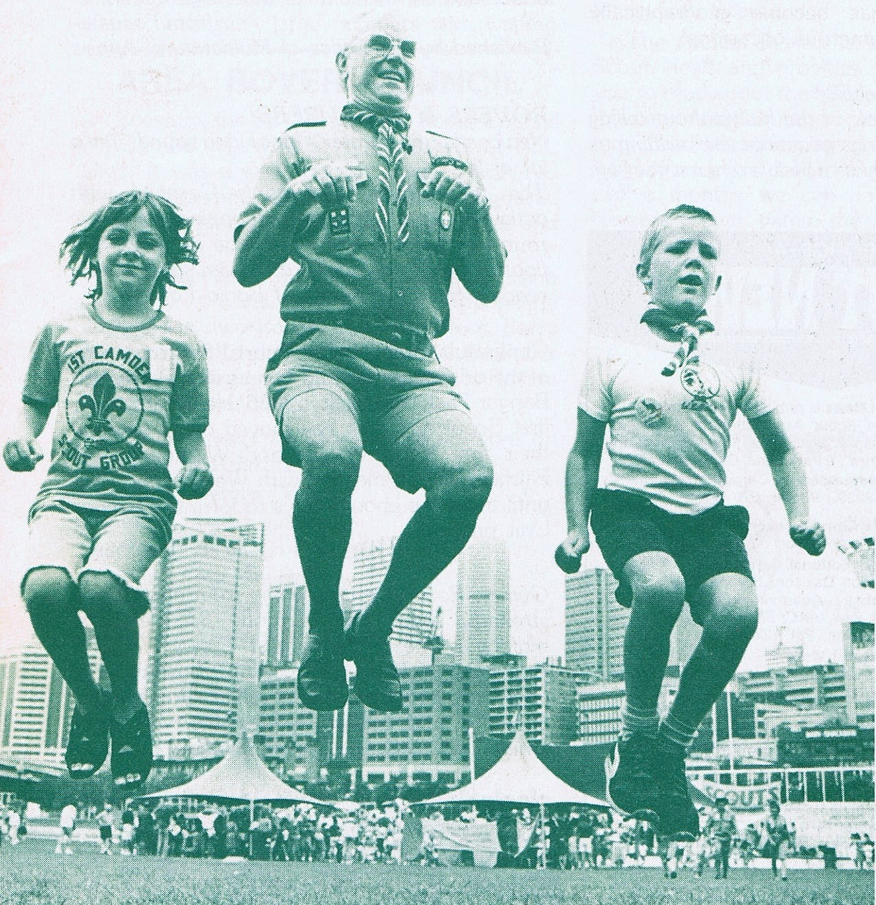

History of Joey Scouts
Having an 'under 8s' section was talked about for many years prior to the formation of Joey Scouts. In 1975, a conference of Chief Commissioners discussed the idea. One major hurdle was thought to be the difficulty of recruiting so many extra leaders when it was already a challenge to fill the roles in the other sections. A paper was prepared in 1977 by PD Golden, a Research and Development Officer for the Scout Association of Australia, entitled 'Scouting for Children Under Eight Years of Age'.
In 1977, 2 experimental 'colonies' were run at 3rd Balga in Western Australia and one Mob at 2nd Cardiff in New South Wales. The Cardiff Mob was reportedly a success. They started with 11 boys in May 1977 and in July the first Joeys were invested. They soon had 20 Joeys and 4 leaders. The uniform was comprised of a brown T-shirt, a khaki vest with badges on it, khaki shorts, a green hat with Cub cap badge and a Group scarf with a grey woggle. A modified version of the Canadian Beaver program was used.
Another discussion paper, "Some implications concerning the possible extension of Scouting to young people under eight years of age", was written by a 'Special Task Force' in February 1979. The report mentioned that other countries already had sections equivalent to Joey Scouts since as early as 1955.
On the 1st of July 1990, the Joey Scout section officially began. The first Mobs were known as 'foundation Mobs', the idea being that they would help train leaders who would then start their own Mobs in other areas. They accepted boys and girls aged from 6 - 7 ½. The official public launch ceremony took place at Darling Harbour on the 8th of February, 1991.
